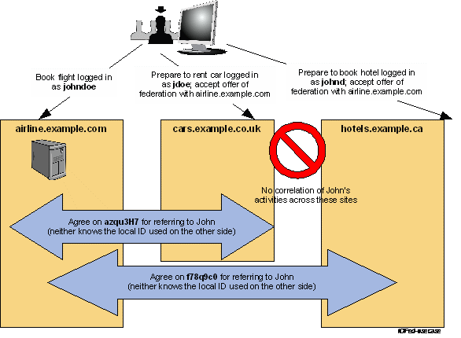
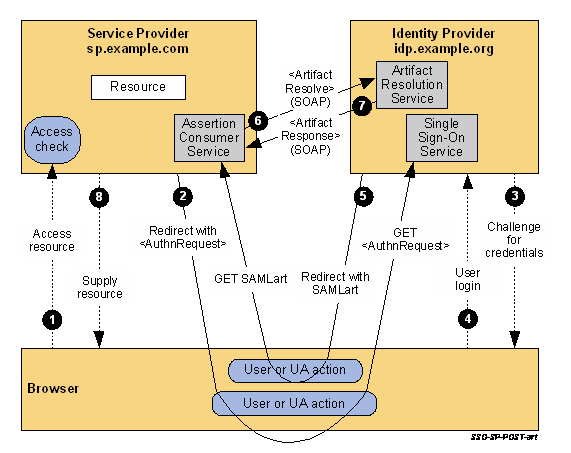
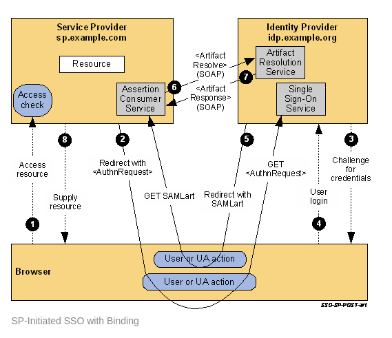
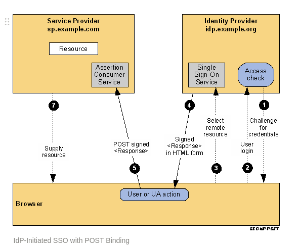

SSO 与 SAML
在谈论单点登录系统（SSO）实现的时候，我们做技术选型，最常听到的两个方案是SAML与OAuth。得益于现在各互联网大厂的推广，OAuth的概念在这几年深入人心，几乎是SSO的首选方案。但是在OAuth还没兴起的年代，想要快速搭建一套符合业界标准的SSO系统，SAML基本上是唯一选择了。所以在众多历史悠久的企业级应用里，SAML仍然占据着SSO服务的半壁江山。
OAuth 之前已经了解的听清楚了，今天稍微总结一下SAML。
SAML 的一些概念
SP 与 IdP
SAML 中分为SP（service provider）与IdP（identity provider）两个角色。SP属于为用户提供各种业务服务的应用，IdP属于提供用户登录认证的应用。

上面这张图摘自Oasis官方网站上SAML的说明，其中hotels.example.ca就是IdP,当其他两个SP应用需要用户登录时，就会重定向到它这边做登录认证，然后重定向回SP。
详细的认证流程可以参考Oasis官网上的3.3 Identity Federation Use Case对该流程的说明
SAML的XML文档结构

上图阐述了传输SAML数据时用到的一些概念。其中Assertions就是传输中具体的用户认证数据，用XML组织。Protocols是Assertions所承载的协议，SAML定义了多种协议，一般常用的是Authentication Request Protocol。Binding定义了idP与SP之间通信的方式（HTTP POST Binding或者SOAP等）。Profiles定义了使用SAML时一些最基础的信息，一般做SSO单点登录时，Profiles是相对固定的。
对于SAML的XML文档中每个属性用途的说明，其实一开始不必过于详细地了解，由于概念太多，很容易收到打击。可以先快速过一遍OASIS网站上的说明，然后挑一种认证流程详细了解一下各请求报文。
Web Broswer SSO Profile
常见web应用基于SAML的SSO实现一般使用的就是Web Broswer SSO Profile。它包含两种flow:
SP-initiated web SSO flow 和 IdP-initiated web SSO flow ，从字面上就很容易理解，一种是SP发起的，一种是IdP发起的。SP-initiated web SSO flow 又分为两种： Redirect/POST Bindings 和 POST/Artifact Bindings。
SP-Initiated SSO: Redirect/POST Bindings

流程说明摘抄自OASIS，挺清楚的，就不翻译了：
- The user attempts to access a resource on sp.example.com. The user does not have a valid logon session (i.e. security context) on this site. The SP saves the requested resource URL in local state information that can be saved across the web SSO exchange.
The SP sends an HTML form back to the browser in the HTTP response (HTTP status 200). The HTML FORM contains a SAML
message encoded as the value of a hidden form control named SAMLRequest. <form method="post" action="https://idp.example.org/SAML2/SSO/POST" ...> <input type="hidden" name="SAMLRequest" value="request" /> <input type="hidden" name="RelayState" value="token" /> ... <input type="submit" value="Submit" /> </form>The RelayState token is an opaque reference to state information maintained at the service provider. (The RelayState mechanism can leak details of the user’s activities at the SP to the IdP and so the SP should take care in its implementation to protect the user’s privacy.) The value of the SAMLRequest parameter is the base64 encoding of the following
samlp:AuthnRequestelement:<samlp:AuthnRequest xmlns:samlp="urn:oasis:names:tc:SAML:2.0:protocol" xmlns:saml="urn:oasis:names:tc:SAML:2.0:assertion" ID="identifier_1" Version="2.0" IssueInstant="2004-12-05T09:21:59Z" AssertionConsumerServiceIndex="1"> <saml:Issuer>https://sp.example.com/SAML2</saml:Issuer> <samlp:NameIDPolicy AllowCreate="true" Format="urn:oasis:names:tc:SAML:2.0:nameid-format:transient"/> </samlp:AuthnRequest>For ease-of-use purposes, the HTML FORM typically will be accompanied by script code that will automatically post the form to the destination site (which is the IdP in this case). The browser, due either to a user action or execution of an “auto-submit” script, issues an HTTP POST request to send the form to the identity provider’s Single Sign-On Service.
POST /SAML2/SSO/POST HTTP/1.1 Host: idp.example.org Content-Type: application/x-www-form-urlencoded Content-Length: nnn SAMLRequest=request&RelayState=tokenThe Single Sign-On Service determines whether the user has an existing logon security context at the identity provider that meets the default or requested authentication policy requirements. If not, the IdP interacts with the browser to challenge the user to provide valid credentials.
- The user provides valid credentials and a local logon security context is created for the user at the IdP.
- The IdP Single Sign-On Service issues a SAML assertion representing the user’s logon security context and places the assertion within a SAML
<Response>message. Since the HTTP Artifact binding will be used to deliver the SAML Response message, it is not mandated that the assertion be digitally signed. The IdP creates an artifact containing the source ID for theidp.example.orgsite and a reference to the<Response>message (the MessageHandle). The HTTP Artifact binding allows the choice of either HTTP redirection or an HTML form POST as the mechanism to deliver the artifact to the partner. The figure shows the use of redirection. The SP’s Assertion Consumer Service now sends a SAML
<ArtifactResolve>message containing the artifact to the IdP’s Artifact Resolution Service endpoint. This exchange is performed using a synchronous SOAP message exchange.<samlp:ArtifactResolve xmlns:samlp="urn:oasis:names:tc:SAML:2.0:protocol" xmlns:saml="urn:oasis:names:tc:SAML:2.0:assertion" ID="identifier_2" Version="2.0" IssueInstant="2004-12-05T09:22:04Z" Destination="https://idp.example.org/SAML2/ArtifactResolution"> <saml:Issuer>https://sp.example.com/SAML2</saml:Issuer> <!-- an ArtifactResolve message SHOULD be signed --> <ds:Signature xmlns:ds="http://www.w3.org/2000/09/xmldsig#">...</ds:Signature> <samlp:Artifact>artifact</samlp:Artifact> </samlp:ArtifactResolve>The IdP’s Artifact Resolution Service extracts the MessageHandle from the artifact and locates the original SAML
<Response>message associated with it. This message is then placed inside a SAML<ArtifactResponse>message, which is returned to the SP over the SOAP channel.<samlp:ArtifactResponse xmlns:samlp="urn:oasis:names:tc:SAML:2.0:protocol" ID="identifier_3" InResponseTo="identifier_2" Version="2.0" IssueInstant="2004-12-05T09:22:05Z"> <!-- an ArtifactResponse message SHOULD be signed --> <ds:Signature xmlns:ds="http://www.w3.org/2000/09/xmldsig#">...</ds:Signature> <samlp:Status> <samlp:StatusCode Value="urn:oasis:names:tc:SAML:2.0:status:Success"/> </samlp:Status> <samlp:Response xmlns:samlp="urn:oasis:names:tc:SAML:2.0:protocol" xmlns:saml="urn:oasis:names:tc:SAML:2.0:assertion" ID="identifier_4" InResponseTo="identifier_1" Version="2.0" IssueInstant="2004-12-05T09:22:05Z" Destination="https://sp.example.com/SAML2/SSO/Artifact"> <saml:Issuer>https://idp.example.org/SAML2</saml:Issuer> <ds:Signature xmlns:ds="http://www.w3.org/2000/09/xmldsig#">...</ds:Signature> <samlp:Status> <samlp:StatusCode Value="urn:oasis:names:tc:SAML:2.0:status:Success"/> </samlp:Status> <saml:Assertion xmlns:saml="urn:oasis:names:tc:SAML:2.0:assertion" ID="identifier_5" Version="2.0" IssueInstant="2004-12-05T09:22:05Z"> <saml:Issuer>https://idp.example.org/SAML2</saml:Issuer> <!-- a Subject element is required --> <saml:Subject> <saml:NameID Format="urn:oasis:names:tc:SAML:1.1:nameid-format:emailAddress"> user@mail.example.org </saml:NameID> <saml:SubjectConfirmation Method="urn:oasis:names:tc:SAML:2.0:cm:bearer"> <saml:SubjectConfirmationData InResponseTo="identifier_1" Recipient="https://sp.example.com/SAML2/SSO/Artifact" NotOnOrAfter="2004-12-05T09:27:05Z"/> </saml:SubjectConfirmation> </saml:Subject> <saml:Conditions NotBefore="2004-12-05T09:17:05Z" NotOnOrAfter="2004-12-05T09:27:05Z"> <saml:AudienceRestriction> <saml:Audience>https://sp.example.com/SAML2</saml:Audience> </saml:AudienceRestriction> </saml:Conditions> <saml:AuthnStatement AuthnInstant="2004-12-05T09:22:00Z" SessionIndex="identifier_5"> <saml:AuthnContext> <saml:AuthnContextClassRef> urn:oasis:names:tc:SAML:2.0:ac:classes:PasswordProtectedTransport </saml:AuthnContextClassRef> </saml:AuthnContext> </saml:AuthnStatement> </saml:Assertion> </samlp:Response> </samlp:ArtifactResponse>The SP extracts and processes the
<Response>message and then processes the embedded assertion in order to create a local logon security context for the user at the SP. Once this is completed, the SP retrieves the local state information indicated by the RelayState data to recall the originally-requested resource URL. It then sends an HTTP redirect response to the browser directing it to access the originally requested resource (not shown).An access check is made to establish whether the user has the correct authorization to access the resource. If the access check passes, the resource is then returned to the browser.
SP-Initiated SSO: POST/Artifact Bindings

- The user attempts to access a resource on sp.example.com. The user does not have a valid logon session (i.e. security context) on this site. The SP saves the requested resource URL in local state information that can be saved across the web SSO exchange.
The SP sends an HTML form back to the browser in the HTTP response (HTTP status 200). The HTML FORM contains a SAML
message encoded as the value of a hidden form control named SAMLRequest. <form method="post" action="https://idp.example.org/SAML2/SSO/POST" ...> <input type="hidden" name="SAMLRequest" value="request" /> <input type="hidden" name="RelayState" value="token" /> ... <input type="submit" value="Submit" /> </form>The RelayState token is an opaque reference to state information maintained at the service provider. (The RelayState mechanism can leak details of the user’s activities at the SP to the IdP and so the SP should take care in its implementation to protect the user’s privacy.) The value of the SAMLRequest parameter is the base64 encoding of the following
samlp:AuthnRequestelement:<samlp:AuthnRequest xmlns:samlp="urn:oasis:names:tc:SAML:2.0:protocol" xmlns:saml="urn:oasis:names:tc:SAML:2.0:assertion" ID="identifier_1" Version="2.0" IssueInstant="2004-12-05T09:21:59Z" AssertionConsumerServiceIndex="1"> <saml:Issuer>https://sp.example.com/SAML2</saml:Issuer> <samlp:NameIDPolicy AllowCreate="true" Format="urn:oasis:names:tc:SAML:2.0:nameid-format:transient"/> </samlp:AuthnRequest>For ease-of-use purposes, the HTML FORM typically will be accompanied by script code that will automatically post the form to the destination site (which is the IdP in this case). The browser, due either to a user action or execution of an “auto-submit” script, issues an HTTP POST request to send the form to the identity provider’s Single Sign-On Service.
POST /SAML2/SSO/POST HTTP/1.1 Host: idp.example.org Content-Type: application/x-www-form-urlencoded Content-Length: nnn SAMLRequest=request&RelayState=tokenThe Single Sign-On Service determines whether the user has an existing logon security context at the identity provider that meets the default or requested authentication policy requirements. If not, the IdP interacts with the browser to challenge the user to provide valid credentials.
- The user provides valid credentials and a local logon security context is created for the user at the IdP.
- The IdP Single Sign-On Service issues a SAML assertion representing the user’s logon security context and places the assertion within a SAML
<Response>message. Since the HTTP Artifact binding will be used to deliver the SAML Response message, it is not mandated that the assertion be digitally signed. The IdP creates an artifact containing the source ID for theidp.example.orgsite and a reference to the<Response>message (the MessageHandle). The HTTP Artifact binding allows the choice of either HTTP redirection or an HTML form POST as the mechanism to deliver the artifact to the partner. The figure shows the use of redirection. The SP’s Assertion Consumer Service now sends a SAML
<ArtifactResolve>message containing the artifact to the IdP’s Artifact Resolution Service endpoint. This exchange is performed using a synchronous SOAP message exchange.<samlp:ArtifactResolve xmlns:samlp="urn:oasis:names:tc:SAML:2.0:protocol" xmlns:saml="urn:oasis:names:tc:SAML:2.0:assertion" ID="identifier_2" Version="2.0" IssueInstant="2004-12-05T09:22:04Z" Destination="https://idp.example.org/SAML2/ArtifactResolution"> <saml:Issuer>https://sp.example.com/SAML2</saml:Issuer> <!-- an ArtifactResolve message SHOULD be signed --> <ds:Signature xmlns:ds="http://www.w3.org/2000/09/xmldsig#">...</ds:Signature> <samlp:Artifact>artifact</samlp:Artifact> </samlp:ArtifactResolve>The IdP’s Artifact Resolution Service extracts the MessageHandle from the artifact and locates the original SAML
<Response>message associated with it. This message is then placed inside a SAML<ArtifactResponse>message, which is returned to the SP over the SOAP channel.<samlp:ArtifactResponse xmlns:samlp="urn:oasis:names:tc:SAML:2.0:protocol" ID="identifier_3" InResponseTo="identifier_2" Version="2.0" IssueInstant="2004-12-05T09:22:05Z"> <!-- an ArtifactResponse message SHOULD be signed --> <ds:Signature xmlns:ds="http://www.w3.org/2000/09/xmldsig#">...</ds:Signature> <samlp:Status> <samlp:StatusCode Value="urn:oasis:names:tc:SAML:2.0:status:Success"/> </samlp:Status> <samlp:Response xmlns:samlp="urn:oasis:names:tc:SAML:2.0:protocol" xmlns:saml="urn:oasis:names:tc:SAML:2.0:assertion" ID="identifier_4" InResponseTo="identifier_1" Version="2.0" IssueInstant="2004-12-05T09:22:05Z" Destination="https://sp.example.com/SAML2/SSO/Artifact"> <saml:Issuer>https://idp.example.org/SAML2</saml:Issuer> <ds:Signature xmlns:ds="http://www.w3.org/2000/09/xmldsig#">...</ds:Signature> <samlp:Status> <samlp:StatusCode Value="urn:oasis:names:tc:SAML:2.0:status:Success"/> </samlp:Status> <saml:Assertion xmlns:saml="urn:oasis:names:tc:SAML:2.0:assertion" ID="identifier_5" Version="2.0" IssueInstant="2004-12-05T09:22:05Z"> <saml:Issuer>https://idp.example.org/SAML2</saml:Issuer> <!-- a Subject element is required --> <saml:Subject> <saml:NameID Format="urn:oasis:names:tc:SAML:1.1:nameid-format:emailAddress"> user@mail.example.org </saml:NameID> <saml:SubjectConfirmation Method="urn:oasis:names:tc:SAML:2.0:cm:bearer"> <saml:SubjectConfirmationData InResponseTo="identifier_1" Recipient="https://sp.example.com/SAML2/SSO/Artifact" NotOnOrAfter="2004-12-05T09:27:05Z"/> </saml:SubjectConfirmation> </saml:Subject> <saml:Conditions NotBefore="2004-12-05T09:17:05Z" NotOnOrAfter="2004-12-05T09:27:05Z"> <saml:AudienceRestriction> <saml:Audience>https://sp.example.com/SAML2</saml:Audience> </saml:AudienceRestriction> </saml:Conditions> <saml:AuthnStatement AuthnInstant="2004-12-05T09:22:00Z" SessionIndex="identifier_5"> <saml:AuthnContext> <saml:AuthnContextClassRef> urn:oasis:names:tc:SAML:2.0:ac:classes:PasswordProtectedTransport </saml:AuthnContextClassRef> </saml:AuthnContext> </saml:AuthnStatement> </saml:Assertion> </samlp:Response> </samlp:ArtifactResponse>The SP extracts and processes the
<Response>message and then processes the embedded assertion in order to create a local logon security context for the user at the SP. Once this is completed, the SP retrieves the local state information indicated by the RelayState data to recall the originally-requested resource URL. It then sends an HTTP redirect response to the browser directing it to access the originally requested resource (not shown).An access check is made to establish whether the user has the correct authorization to access the resource. If the access check passes, the resource is then returned to the browser.
两个 SP-Initiated flow 有什么区别？
OASIS网站上并没有说为什么要这两种flow。上图两者最明显的区别是SP对IdP的response验证方式，一种不走服务端，一种通过SOAP进行了一次服务端通信。我觉得可能是为了满足不同实现方的条件，毕竟不是所有实现方都有证书，可以对XML进行加签和校验，所以只能再走一次服务端通信。
IdP-initiated web SSO flow

IdP-initiated web SSO flow 跟 SP-Initiated flow 比较类似了，只是发起端在IdP:
- If the user does not have a valid local security context at the IdP, at some point the user will be challenged to supply their credentials to the IdP site,
idp.example.org. - The user provides valid credentials and a local logon security context is created for the user at the IdP.
- The user selects a menu option or link on the IdP to request access to an SP web site,
sp.example.com. This causes the IdP’s Single Sign-On Service to be called. - The Single Sign-On Service builds a SAML assertion representing the user’s logon security context. Since a POST binding is going to be used, the assertion is digitally signed before it is placed within a SAML
<Response>message. The<Response>message is then placed within an HTML FORM as a hidden form control named SAMLResponse. (If the convention for identifying a specific application resource at the SP is supported at the IdP and SP, the resource URL at the SP is also encoded into the form using a hidden form control named RelayState.) The Single Sign-On Service sends the HTML form back to the browser in the HTTP response. For ease-of-use purposes, the HTML FORM typically will contain script code that will automatically post the form to the destination site. - The browser, due either to a user action or execution of an “auto-submit” script, issues an HTTP POST request to send the form to the SP’s Assertion Consumer Service. The service provider’s Assertion Consumer Service obtains the
<Response>message from the HTML FORM for processing. The digital signature on the SAML assertion must first be validated and then the assertion contents are processed in order to create a local logon security context for the user at the SP. Once this completes, the SP retrieves the RelayState data (if any) to determine the desired application resource URL and sends an HTTP redirect response to the browser directing it to access the requested resource (not shown). - An access check is made to establish whether the user has the correct authorization to access the resource. If the access check passes, the resource is then returned to the browser.
SAML VS OAuth
最后比较一下SAML与OAuth的区别。
SAML 有更多面向企业级的认证授权配置选项，定制化程度高。一旦SP和IdP实现了SAML协议，接入对方只需要对系统进行配置导入和一些简单的配置，基本不会有另外开发工作。所以SAML更适合各种异构的系统组合，特别是那种需要与外部系统（没有源码，无法控制对方行为）对接的情况。
OAuth出现比SAML晚得多，目的是为了方便的做互联网应用之间的授权。它在技术实现上更新，更简单，对互联网应用，移动应用更友好。接入需要一定开发工作。OAuth 是授权（Authorization）协议，不是认证（Authentication）协议，只是某些情况下可以用作登陆认证。